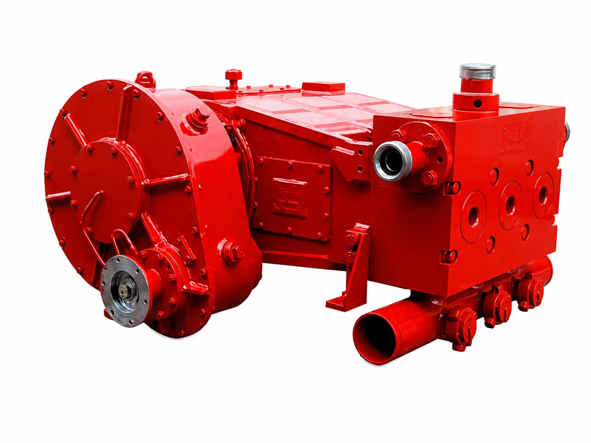

Fracturing Pump Parts / MODEL RANGE
SPM TWS-600 Fracturing Pump Spare Parts
Pratt Oil supplies a wide range of spare parts for SPM TWS600 fracturing pumps used in oilfield fracturing, cementing, acidizing, and other high-pressure pumping operations.
Send your part number, pump nameplate, drawing or component photos to confirm the correct replacement.

MAINTENANCE / REPAIR / OVERHAUL
Replacement parts we supply
- Fluid end assemblies
- Plungers and plunger packing
- Valves and valve seats
- Valve springs and valve covers
- Suction and discharge components
- Packing boxes and glands
- Crossheads and connecting rods
- Bearings and power end components
- Seals, O-rings, gaskets, and repair kits
- Other replacement and overhaul parts
PART NUMBERS / TECHNICAL REFERENCE
TWS600S parts reference
TWS600S parts reference. Confirm the complete pump model and suffix before selecting parts for TWS600, TWS600S or other configurations.
Use this reference to prepare your inquiry. Availability and compatibility are confirmed with your quotation.
150 parts in this reference
Download parts list (CSV) ↓| Part number | Description |
|---|---|
| 1P104705 | Fluid End |
| 3P100137 | Upper Front Cover |
| P103068 | Polyurethane Seal for Upper Front Cover |
| 2P104716 | 2.5″ Plunger |
| P100151 | D-Shaped Seal for Upper Front Cover |
| 2P103345 | 3″ Plunger |
| P109379 | D-Shaped Seal for Upper Front Cover |
| 3P107525 | Bronze Bushing |
| 4P100116 | Valve Spring |
| 3P107527 | Bronze Bushing |
| 3P100176 | Valve Spring Retainer Plate |
| P103572HP | Soft Plunger Packing |
| 2A109540PP | Valve |
| P100332HP | Soft Plunger Packing |
| 4P100198 | Valve Spring |
| P103571HP | Hard Plunger Packing |
| 2P110359 | Valve Insert |
| P100331HP | Hard Plunger Packing |
| 3P104372 | Front Cover Nut |
| 3P103522 | Packing Housing |
| 2A109544 | Valve Seat |
| 3P103524 | Packing Housing |
| 2A109537PP | Valve with Insert |
| 3P104707 | Plunger Crown Nut |
| 3P100138 | Valve Spring Retainer Plate |
| 3P104709 | Plunger Crown Nut |
| 2A109541 | Valve Seat |
| P104736HP | Crown Nut Seal |
| 3P100135 | Lower Front Cover |
| P102093HP | Crown Nut Seal |
| P103293 | Valve Seat Seal |
| 3P104710 | Lower Front Cover |
| P100151 | Plastic Seal for Lower Front Cover |
| P107469 | Adapter |
| 2P104711 | Upper Front Cover |
| 3P100025 | Plunger Push Rod |
| 2P110356 | 4″ Valve Insert |
| P105095 | Polyurethane Seal for Upper/Lower Front Cover |
| 3P100148 | 5″ Plunger Clamp |
| P103064 | Small PTFE Sealing Ring |
| P109313 | D-Shaped Seal for Upper/Lower Front Cover |
| 3A104755HP | Plunger Packing Assembly |
| P103371 | Large PTFE Sealing Ring |
| 3P101634 | Valve Spring Retainer Plate |
| P14897 | Nut 1-8 UNC |
| P103369 | Large Sealing Ring |
| 4P104721 | Valve Spring |
| P109509 | Discharge Flange Face Seal Ring |
| P103063 | Small Sealing Ring |
| 3P104723 | Front Cover Nut |
| P109509 | Discharge Flange D-Shaped Seal Ring |
| P108291 | Lower Front Cover Seal |
| 2A109608PP | Valve |
| 4P10229 | 2″ High-Pressure Line Face Seal |
| 3A105297HP | Plunger Packing Assembly |
| 2A109605PP | Valve Seat |
| P100197 | Polyurethane Seal for Lower Front Cover |
| 3A109556 | Small Plunger Packing |
| P104289 | Valve Seat Seal |
| 3P100182 | Discharge Flange |
| 4P101714 | Plunger Stud |
| P107455 | Adapter |
| P14896 | Discharge Flange Stud 1-8 UNC x 3-1/2 |
| P107614 | Adapter |
| 2P103069 | Front Cover Nut for Pressure Sensor |
| 2P110355 | Valve Insert |
| G04010100025AA | Support |
| G04050200010AA | Discharge Flange Assembly |
| P103576 | Small PTFE Sealing Ring |
| G04010700020AA | Crosshead Assembly |
| G04050300009AA | Discharge Plug Assembly |
| P103575 | Large PTFE Sealing Ring |
| G0410500012AA | Crank Connecting Rod Mechanism Assembly |
| P103370 | Large PTFE Sealing Ring |
| G06010000019AA | Suction Manifold |
| P102244 | Large Sealing Ring |
| P0100455AA | Bearing Housing |
| P103368 | Large Sealing Ring |
| P2200478AA | Bolt |
| P18481 | Small Sealing Ring |
| P6900068AA | Bearing Housing Washer |
| P2600047AA | Small Rod |
| 4313000022 | Spring Washer |
| P2600048AA | Large Rod |
| 3A104731HP | Plunger Packing Assembly |
| 4317100022 | Washer |
| 3A104769HP | Plunger Packing Assembly |
| G04050300012AA | Discharge Cover Assembly |
| 3A107044HP | Small Plunger Packing |
| P22008899AA | Bearing Housing Bolt |
| 3A107009HP | Rubber Plunger Packing |
| 5402550001 | Spring |
| 2P104719 | Front Cover Nut for Pressure Sensor |
| P1200649AA | Nut |
| P2200897AA | Bolt |
| G04050400010AA | Seal Block |
| G04020000002AA | Reduction Gearbox |
| G04051000001AA | Fastening Bolt |
| P4200011AA | Eccentric Shaft |
| P2300144AA | 3″ Plunger |
| P2200898AA | Bolt |
| P2300094AA | 4″ Plunger |
| G04010103008AA | Rod Assembly |
| P2300143AA | 3-1/2″ Plunger |
| P2200439AA | Guide Bushing Mounting Bolt |
| 1P100140 | Fluid End Assembly |
| G04050500018AA | Seal Assembly |
| 1P102978 | Fluid End |
| P4400040AA | Crosshead |
| 4P100143 | Back-Up Ring |
| P7100431AA | Spring Seat |
| 2P103312 | 4.5″ Plunger |
| P1400865AA | Crosshead Guide Bushing |
| P100141HP | Soft Plunger Packing |
| P2200894AA | Bolt |
| 3P107531 | Bronze Bushing |
| 4900200002 | Valve Assembly |
| P100142HP | Hard Plunger Packing |
| P1000315AA | Crosshead Washer |
| P100195HP | Soft Plunger Packing |
| 4313700090 | Thrust Ring |
| 4P100144 | Wide Bronze Adapter Bushing |
| P1100607AA | Valve Seat |
| P100652HP | Hard Plunger Packing |
| P2001386AA | Rod Pin |
| 4P100145 | Narrow Bronze Adapter Bushing |
| P1700305AA | O-Ring |
| 3P103022 | Packing Housing |
| QBJ120208 | Threaded Plug |
| P102211HP | Crown Nut Seal |
| G04050700010AA | Suction Cover Assembly |
| 3P103027G | Plunger Crown Nut |
| 4314608018 | Key |
| 3P100146G | 5.5″ Plunger Crown Nut |
| P1300338AA | Threaded Gasket |
| P101252HP | Crown Nut Seal |
| 5402550003 | Spring |
| 3P100136 | 5.5″ Plunger |
| P5300023AA | Valve Cap Wrench |
| 3P104373 | Lower Front Cover |
| 5300150021 | Seal |
| 4P100130 | Front Cover Nut |
| G04050900008AA | Valve Cover Puller |
| 3P105149 | Upper Front Cover |
| 5402600146 | 3.5″ Seal |
| 4900200021 | Valve Rubber |
| K31201100001AA | Plug Valve Assembly |
| 5402600148 | Guide Ring |
| K41201102001AA | Quick Coupling Assembly |
| 5300250033 | Main Pressure Ring |
Build your SPM TWS600 parts list.
Send the pump model, required parts and quantities. Include drawings or nameplate photos to help confirm fit.
Jinan Pratt Oil Equipment Co., Ltd. · 2000@pratt-oil.com